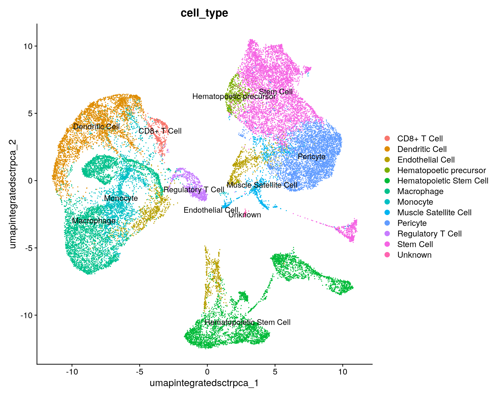

Workflow Overview

Introduction
A frequent bottleneck in the single-cell RNA-seq analysis workflow is
annotating our clustering results, as it requires bridging the gap
between the data and prior knowledge (source).
While generating markers for each cluster and evaluating the expression
of known marker genes is important, it may or may not be sufficient to
assign cell-type or sub-type labels.
In this section, our goal is to use an automated annotation tool to
generate cell type predictions for our clusters.
Like the previous sections, the process to assign cell-types to
clusters can be very iterative. In addition, the steps to reach a
“Figure 1” level of labeled clusters may not be presented in detail, can
be very dataset dependent, and often is more challenging for less
characterized tissues.
Objectives
- Understand the complexities of cell-type annotation
- Use
scCATCH cell-type predictions to annotate our
clusters
Cell type predictions
Automated tools have the advantage of being able to compare between
the expression patterns in our dataset and large numbers of reference
datasets or databases at a scale that is not feasible to do
manually.
As described in
more detail by the Ouyang Lab and summarized in the figure below,
there are many computational tools that aim to assign cell type labels
for single-cell data. These methods generally fall into three
categories:
- Marker based approaches that use gene sets drawn from the
literature, including previous single-cell studies,
- Correlation based approaches that estimate the similarity between
the cells or clusters in the input data and some reference data and
- Machine learning approaches that include training on a single-cell
reference atlas.

Image: Diagram of types of cell annotation
approaches (from Oyang materials).
However, across any of these approaches the quality of the reference
data (and reliability of the authors labels) and relevancy to your
specific tissue/experiment (and the resolution of your biological
question) is crucial. Additionally, it’s important to consider that rare
or novel cell populations may not be present or well-characterized in
available references and that even after filtering some clusters
correspond to stressed or dying cells and not a particular cell-type or
subtype. Therefore, any prediction should be reviewed and considered in
the context both marker gene expression for the dataset and knowledge of
the biological system and broader literature.
Some tools and references are available primarily for human tissues
(and not mouse or rat), particular for tissues other than PBMCs and the
brain. For human data, if a relevant reference is available for your
experiment, we would recommend trying Azimuth (created by authors
of Seurat). 10x
has a tutorial that includes example of using Azimuth, including a
feature of the tool that allows for first pass of cell-type assignment
of more common cell-types followed by identifying rarer populations that
may not be identified in the first pass.
Additional automated annotation resources
Automated cell-type annotation is an active area of research and
development and many other tools and resources are available, including
OSCA’s
demonstration of the SingleR method, a Tutorial by Clarke et
al. for cell-type annotations, and an entire
chapter of the SC best practices book.
Using scCATCH
A tool we often use for both mouse and human data cell-type
predictions is called scCATCH which, per
the author’s description in Shao et al
(2020), annotates cell-types using a “tissue-specific cellular
taxonomy reference database (CellMatch) and [an] evidence-based scoring
(ES) protocol”. The CellMatch reference is compiled from CellMarker (Zhang
et al., 2019b), MCA (Han
et al., 2018), CancerSEA (Yuan
et al., 2019), and the CD
Marker Handbook and PMIDs for relevant literature are reported in
the prediction results.

Image: scCATCH summary from Shao et al
(2020).
First, we need to load the scCATCH library. Then, we’ll double check
that we are using the expected resolution cluster results (this is
particularly important if we generated multiple resolutions in our
clustering steps), before creating a new object from our
counts data with createscCATCH() and adding
our marker genes to the scCATCCH object.
To increase the speed and accuracy of our predictions, we’ll create
query of relevant tissues (which requires some prior knowledge of the
experiment and using the scCATCH wiki to
select tissues from the species) before we run the tool:
library(scCATCH)
# check that cell identities are set to expected resolution
all(Idents(geo_so) == geo_so$integrated.sct.rpca.clusters)
[1] TRUE
# create scCATCH object, using count data
geo_catch = createscCATCH(data = geo_so@assays$SCT@counts, cluster = as.character(Idents(geo_so)))
# add marker genes to use for predictions
geo_catch@markergene = geo_markers
# specify tissues/cell-types from the scCATCH reference
geo_catch@marker = cellmatch[cellmatch$species == 'Mouse' & cellmatch$tissue %in% c('Blood', 'Peripheral Blood', 'Muscle', 'Skeletal muscle', 'Epidermis', 'Skin'), ]
# run scCATCH to generate predictions
geo_catch = findcelltype(geo_catch)
# look at the predictions
geo_catch@celltype %>% select(cluster, cell_type, celltype_score)
cluster cell_type celltype_score
1 0 Stem Cell 0.83
2 1 Hematopoietic Stem Cell 0.87
3 2 Macrophage 0.82
4 3 Dendritic Cell 0.86
5 4 Monocyte 0.82
6 5 Stem Cell 0.88
7 6 Neutrophil 0.81
8 7 Stem Cell 0.85
9 8 Hematopoietic Stem Cell 0.90
10 9 Hematopoietic Stem Cell 0.87
11 10 Hematopoietic Stem Cell 0.91
12 11 Muscle Satellite Cell 0.94
13 12 CD8+ T Cell 0.90
14 13 CD8+ T Cell 0.88
15 14 CD8+ T Cell 0.89
16 15 Embryonic Stem Cell 0.87
17 16 Hematopoietic Stem Cell 0.87
18 17 Hematopoietic Stem Cell 0.88
19 18 Muscle Cell 0.69
When we look at our results we can see the cell type score, which
gives us an idea of the confidence of that prediction. Not shown here
but the full celltype table also includes marker genes and
PMIDs for relevant literature for each prediction.
As these cell-types correspond to the cell-types and subtypes we’d
expect to be present in these data and most of the prediction scores are
quite high, we can reasonably use these results to annotate our
clusters. In our experience, the scCATCH results often help guide
cluster annotation but scores can vary and the predictions may need to
be revised based on researcher’s knowledge of the biological system.
Annotate clusters
Next, we’ll add celltype the predictions to our Seurat object to
replace our clusters’ numerical identities. Note: we will create a new
metadata object where we join cell types. However, this will destroy the
row names - which will cause a problem in Seurat - so we have to add
them back.
# Extract the cell types only to merge into the meta.data
catch_celltypes = geo_catch@celltype %>% select(cluster, cell_type)
# Merge cell types in but as a new table to slide into @meta.data
new_metadata = geo_so@meta.data %>% left_join(catch_celltypes, by = c('integrated.sct.rpca.clusters' = 'cluster'))
rownames(new_metadata) = rownames(geo_so@meta.data) # We are implicitly relying on the same row order!
# Replace the meta.data
geo_so@meta.data = new_metadata
head(geo_so@meta.data)
orig.ident nCount_RNA nFeature_RNA day replicate percent.mt
HODay0replicate1_AAACCTGAGAGAACAG-1 HO.Day0.replicate1 10234 3226 Day0 replicate1 1.240962
HODay0replicate1_AAACCTGGTCATGCAT-1 HO.Day0.replicate1 3158 1499 Day0 replicate1 7.536415
HODay0replicate1_AAACCTGTCAGAGCTT-1 HO.Day0.replicate1 13464 4102 Day0 replicate1 3.112002
HODay0replicate1_AAACGGGAGGCCCGTT-1 HO.Day0.replicate1 1189 629 Day0 replicate1 3.700589
HODay0replicate1_AAACGGGCAACTGGCC-1 HO.Day0.replicate1 7726 2602 Day0 replicate1 2.938131
HODay0replicate1_AAACGGGGTCCGAATT-1 HO.Day0.replicate1 5165 2362 Day0 replicate1 9.196515
nCount_SCT nFeature_SCT integrated.sct.rpca.clusters seurat_clusters
HODay0replicate1_AAACCTGAGAGAACAG-1 6061 2865 1 1
HODay0replicate1_AAACCTGGTCATGCAT-1 4625 1510 1 1
HODay0replicate1_AAACCTGTCAGAGCTT-1 5426 2485 5 5
HODay0replicate1_AAACGGGAGGCCCGTT-1 4165 919 1 1
HODay0replicate1_AAACGGGCAACTGGCC-1 5858 2585 1 1
HODay0replicate1_AAACGGGGTCCGAATT-1 5162 2348 8 8
cell_type
HODay0replicate1_AAACCTGAGAGAACAG-1 Hematopoietic Stem Cell
HODay0replicate1_AAACCTGGTCATGCAT-1 Hematopoietic Stem Cell
HODay0replicate1_AAACCTGTCAGAGCTT-1 Stem Cell
HODay0replicate1_AAACGGGAGGCCCGTT-1 Hematopoietic Stem Cell
HODay0replicate1_AAACGGGCAACTGGCC-1 Hematopoietic Stem Cell
HODay0replicate1_AAACGGGGTCCGAATT-1 Hematopoietic Stem Cell
Checkpoint : Has the metadata for your
geo_so object been updated?
Visualise annotated clusters
Lastly, we can generate a revised UMAP plot with our descriptive
cluster labels by using our updated Seurat object and providing the new
cell_type label for the group.by argument:
catch_umap_plot = DimPlot(geo_so, group.by = 'cell_type', label = TRUE, reduction = 'umap.integrated.sct.rpca')
catch_umap_plot

ggsave(filename = 'results/figures/umap_integrated_catch.png', plot = catch_umap_plot, width = 10, height = 8, units = 'in')
Save our progress
We’ll save the scCATCH object. The Seurat object has not been changed
in this module.
saveRDS(geo_so, file = 'results/rdata/geo_so_sct_integrated_with_catch.rds')
saveRDS(geo_catch, file = 'results/rdata/geo_catch.rds')
Summary
Now that we have generated reasonable annotations for our clusters,
we can proceed with the step of differential expression which is
essential to addressing our biological question for this experiment.
Next steps: Differential Expression
These materials have been adapted and extended from materials listed
above. These are open access materials distributed under the terms of
the Creative
Commons Attribution license (CC BY 4.0), which permits unrestricted
use, distribution, and reproduction in any medium, provided the original
author and source are credited.
LS0tCnRpdGxlOiAiQ2VsbCBUeXBlIEFubm90YXRpb24iCmF1dGhvcjogIlVNIEJpb2luZm9ybWF0aWNzIENvcmUiCmRhdGU6ICJgciBTeXMuRGF0ZSgpYCIKb3V0cHV0OgogICAgICAgIGh0bWxfZG9jdW1lbnQ6CiAgICAgICAgICAgIGluY2x1ZGVzOgogICAgICAgICAgICAgICAgaW5faGVhZGVyOiBoZWFkZXIuaHRtbAogICAgICAgICAgICB0aGVtZTogcGFwZXIKICAgICAgICAgICAgdG9jOiB0cnVlCiAgICAgICAgICAgIHRvY19kZXB0aDogNAogICAgICAgICAgICB0b2NfZmxvYXQ6IHRydWUKICAgICAgICAgICAgbnVtYmVyX3NlY3Rpb25zOiBmYWxzZQogICAgICAgICAgICBmaWdfY2FwdGlvbjogdHJ1ZQogICAgICAgICAgICBtYXJrZG93bjogR0ZNCiAgICAgICAgICAgIGNvZGVfZG93bmxvYWQ6IHRydWUKLS0tCgo8c3R5bGUgdHlwZT0idGV4dC9jc3MiPgpib2R5LCB0ZCB7CiAgIGZvbnQtc2l6ZTogMThweDsKfQpjb2RlLnJ7CiAgZm9udC1zaXplOiAxMnB4Owp9CnByZSB7CiAgZm9udC1zaXplOiAxMnB4Cn0KPC9zdHlsZT4KCmBgYHtyLCBpbmNsdWRlID0gRkFMU0V9CnNvdXJjZSgiLi4vYmluL2NodW5rLW9wdGlvbnMuUiIpCmtuaXRyX2ZpZ19wYXRoKCIwNy1DZWxsVHlwZUFubm90YXRpb24vMDctIikKYGBgCgojIFdvcmtmbG93IE92ZXJ2aWV3IHsudW5saXN0ZWQgLnVubnVtYmVyZWR9Cgo8YnIvPgo8aW1nIHNyYz0iaW1hZ2VzL3dheWZpbmRlci93YXlmaW5kZXIucG5nIiBhbHQ9IndheWZpbmRlciIgc3R5bGU9ImhlaWdodDogNDAwcHg7Ii8+Cjxici8+Cjxici8+CgojIEludHJvZHVjdGlvbgoKQSBmcmVxdWVudCBib3R0bGVuZWNrIGluIHRoZSBzaW5nbGUtY2VsbCBSTkEtc2VxIGFuYWx5c2lzIHdvcmtmbG93IGlzIGFubm90YXRpbmcgb3VyIGNsdXN0ZXJpbmcgcmVzdWx0cywgYXMgaXQgcmVxdWlyZXMgYnJpZGdpbmcgdGhlIGdhcCBiZXR3ZWVuIHRoZSBkYXRhIGFuZCBwcmlvciBrbm93bGVkZ2UgKFtzb3VyY2VdKGh0dHBzOi8vYmlvY29uZHVjdG9yLm9yZy9ib29rcy8zLjE1L09TQ0EuYmFzaWMvY2VsbC10eXBlLWFubm90YXRpb24uaHRtbCkpLiBXaGlsZSBnZW5lcmF0aW5nIG1hcmtlcnMgZm9yIGVhY2ggY2x1c3RlciBhbmQgZXZhbHVhdGluZyB0aGUgZXhwcmVzc2lvbiBvZiBrbm93biBtYXJrZXIgZ2VuZXMgaXMgaW1wb3J0YW50LCBpdCBtYXkgb3IgbWF5IG5vdCBiZSBzdWZmaWNpZW50IHRvIGFzc2lnbiBjZWxsLXR5cGUgb3Igc3ViLXR5cGUgbGFiZWxzLiAKCkluIHRoaXMgc2VjdGlvbiwgb3VyIGdvYWwgaXMgdG8gdXNlIGFuIGF1dG9tYXRlZCBhbm5vdGF0aW9uIHRvb2wgdG8gZ2VuZXJhdGUgY2VsbCB0eXBlIHByZWRpY3Rpb25zIGZvciBvdXIgY2x1c3RlcnMuIAoKTGlrZSB0aGUgcHJldmlvdXMgc2VjdGlvbnMsIHRoZSBwcm9jZXNzIHRvIGFzc2lnbiBjZWxsLXR5cGVzIHRvIGNsdXN0ZXJzIGNhbiBiZSB2ZXJ5IGl0ZXJhdGl2ZS4gSW4gYWRkaXRpb24sIHRoZSBzdGVwcyB0byByZWFjaCBhICJGaWd1cmUgMSIgbGV2ZWwgb2YgbGFiZWxlZCBjbHVzdGVycyBtYXkgbm90IGJlIHByZXNlbnRlZCBpbiBkZXRhaWwsIGNhbiBiZSB2ZXJ5IGRhdGFzZXQgZGVwZW5kZW50LCBhbmQgb2Z0ZW4gaXMgbW9yZSBjaGFsbGVuZ2luZyBmb3IgbGVzcyBjaGFyYWN0ZXJpemVkIHRpc3N1ZXMuIAoKIyMgT2JqZWN0aXZlcwoKLSAgVW5kZXJzdGFuZCB0aGUgY29tcGxleGl0aWVzIG9mIGNlbGwtdHlwZSBhbm5vdGF0aW9uICAgIAotICBVc2UgYHNjQ0FUQ0hgIGNlbGwtdHlwZSBwcmVkaWN0aW9ucyB0byBhbm5vdGF0ZSBvdXIgY2x1c3RlcnMgICAgCgotLS0tCgpgYGB7ciwgcmVhZF9yZHNfaGlkZGVuLCBlY2hvID0gRkFMU0UsIHdhcm5pbmcgPSBGQUxTRSwgbWVzc2FnZSA9IEZBTFNFfQppZighZXhpc3RzKCdnZW9fc28nKSkgewogIGxpYnJhcnkoU2V1cmF0KQogIGxpYnJhcnkoQlBDZWxscykKICBsaWJyYXJ5KHRpZHl2ZXJzZSkKCiAgb3B0aW9ucyhmdXR1cmUuZ2xvYmFscy5tYXhTaXplID0gMWU5KQoKICBnZW9fc28gPSByZWFkUkRTKCdyZXN1bHRzL3JkYXRhL2dlb19zb19zY3RfaW50ZWdyYXRlZF93aXRoX21hcmtlcnMucmRzJykKfQoKaWYoIWV4aXN0cygnZ2VvX21hcmtlcnMnKSkgewogIGxpYnJhcnkoU2V1cmF0KQogIGxpYnJhcnkoQlBDZWxscykKICBsaWJyYXJ5KHRpZHl2ZXJzZSkKCiAgb3B0aW9ucyhmdXR1cmUuZ2xvYmFscy5tYXhTaXplID0gMWU5KQoKICBnZW9fbWFya2VycyA9IHJlYWRSRFMoJ3Jlc3VsdHMvcmRhdGEvZ2VvX21hcmtlcnMucmRzJykKfQpgYGAKCiMgQ2VsbCB0eXBlIHByZWRpY3Rpb25zCgpBdXRvbWF0ZWQgdG9vbHMgaGF2ZSB0aGUgYWR2YW50YWdlIG9mIGJlaW5nIGFibGUgdG8gY29tcGFyZSBiZXR3ZWVuIHRoZSBleHByZXNzaW9uIHBhdHRlcm5zIGluIG91ciBkYXRhc2V0IGFuZCBsYXJnZSBudW1iZXJzIG9mIHJlZmVyZW5jZSBkYXRhc2V0cyBvciBkYXRhYmFzZXMgYXQgYSBzY2FsZSB0aGF0IGlzIG5vdCBmZWFzaWJsZSB0byBkbyBtYW51YWxseS4KCkFzIGRlc2NyaWJlZCBbaW4gbW9yZSBkZXRhaWwgYnkgdGhlIE91eWFuZyBMYWJdKGh0dHBzOi8vb3V5YW5nbGFiLmNvbS9zaW5nbGVjZWxsL2NsdXN0Lmh0bWwjYW5ub3RhdGluZy1jbHVzdGVycykgYW5kIHN1bW1hcml6ZWQgaW4gdGhlIGZpZ3VyZSBiZWxvdywgdGhlcmUgYXJlIG1hbnkgY29tcHV0YXRpb25hbCB0b29scyB0aGF0IGFpbSB0byBhc3NpZ24gY2VsbCB0eXBlIGxhYmVscyBmb3Igc2luZ2xlLWNlbGwgZGF0YS4gVGhlc2UgbWV0aG9kcyBnZW5lcmFsbHkgZmFsbCBpbnRvIHRocmVlIGNhdGVnb3JpZXM6IAoKMS4gTWFya2VyIGJhc2VkIGFwcHJvYWNoZXMgdGhhdCB1c2UgZ2VuZSBzZXRzIGRyYXduIGZyb20gdGhlIGxpdGVyYXR1cmUsIGluY2x1ZGluZyBwcmV2aW91cyBzaW5nbGUtY2VsbCBzdHVkaWVzLCAKMi4gQ29ycmVsYXRpb24gYmFzZWQgYXBwcm9hY2hlcyB0aGF0IGVzdGltYXRlIHRoZSBzaW1pbGFyaXR5IGJldHdlZW4gdGhlIGNlbGxzIG9yIGNsdXN0ZXJzIGluIHRoZSBpbnB1dCBkYXRhIGFuZCBzb21lIHJlZmVyZW5jZSBkYXRhIGFuZCAKMy4gTWFjaGluZSBsZWFybmluZyBhcHByb2FjaGVzIHRoYXQgaW5jbHVkZSB0cmFpbmluZyBvbiBhIHNpbmdsZS1jZWxsIHJlZmVyZW5jZSBhdGxhcy4gCgohW0ltYWdlOiBEaWFncmFtIG9mIHR5cGVzIG9mIGNlbGwgYW5ub3RhdGlvbiBhcHByb2FjaGVzIChmcm9tIE95YW5nIG1hdGVyaWFscykuXSguL2ltYWdlcy9jdXJyaWN1bHVtLzA3LUNlbGxUeXBlQW5ub3RhdGlvbi9PdXlhbmdfY2x1c3QtY2VsbHR5cGUucG5nKSAgIAoKSG93ZXZlciwgYWNyb3NzIGFueSBvZiB0aGVzZSBhcHByb2FjaGVzIHRoZSBxdWFsaXR5IG9mIHRoZSByZWZlcmVuY2UgZGF0YSAoYW5kIHJlbGlhYmlsaXR5IG9mIHRoZSBhdXRob3JzIGxhYmVscykgYW5kIHJlbGV2YW5jeSB0byB5b3VyIHNwZWNpZmljIHRpc3N1ZS9leHBlcmltZW50IChhbmQgdGhlIHJlc29sdXRpb24gb2YgeW91ciBiaW9sb2dpY2FsIHF1ZXN0aW9uKSBpcyBjcnVjaWFsLiBBZGRpdGlvbmFsbHksIGl0J3MgaW1wb3J0YW50IHRvIGNvbnNpZGVyIHRoYXQgcmFyZSBvciBub3ZlbCBjZWxsIHBvcHVsYXRpb25zIG1heSBub3QgYmUgcHJlc2VudCBvciB3ZWxsLWNoYXJhY3Rlcml6ZWQgaW4gYXZhaWxhYmxlIHJlZmVyZW5jZXMgYW5kIHRoYXQgZXZlbiBhZnRlciBmaWx0ZXJpbmcgc29tZSBjbHVzdGVycyBjb3JyZXNwb25kIHRvIHN0cmVzc2VkIG9yIGR5aW5nIGNlbGxzIGFuZCBub3QgYSBwYXJ0aWN1bGFyIGNlbGwtdHlwZSBvciBzdWJ0eXBlLiBUaGVyZWZvcmUsIGFueSBwcmVkaWN0aW9uIHNob3VsZCBiZSByZXZpZXdlZCBhbmQgY29uc2lkZXJlZCBpbiB0aGUgY29udGV4dCBib3RoIG1hcmtlciBnZW5lIGV4cHJlc3Npb24gZm9yIHRoZSBkYXRhc2V0IGFuZCBrbm93bGVkZ2Ugb2YgdGhlIGJpb2xvZ2ljYWwgc3lzdGVtIGFuZCBicm9hZGVyIGxpdGVyYXR1cmUuIAoKU29tZSB0b29scyBhbmQgcmVmZXJlbmNlcyBhcmUgYXZhaWxhYmxlIHByaW1hcmlseSBmb3IgaHVtYW4gdGlzc3VlcyAoYW5kIG5vdCBtb3VzZSBvciByYXQpLCBwYXJ0aWN1bGFyIGZvciB0aXNzdWVzIG90aGVyIHRoYW4gUEJNQ3MgYW5kIHRoZSBicmFpbi4gRm9yIGh1bWFuIGRhdGEsIGlmIGEgcmVsZXZhbnQgcmVmZXJlbmNlIGlzIGF2YWlsYWJsZSBmb3IgeW91ciBleHBlcmltZW50LCB3ZSB3b3VsZCByZWNvbW1lbmQgdHJ5aW5nIFtBemltdXRoIChjcmVhdGVkIGJ5IGF1dGhvcnMgb2YgU2V1cmF0KV0oaHR0cHM6Ly9hemltdXRoLmh1Ym1hcGNvbnNvcnRpdW0ub3JnLykuIFsxMHggaGFzIGEgdHV0b3JpYWxdKGh0dHBzOi8vd3d3LjEweGdlbm9taWNzLmNvbS9hbmFseXNpcy1ndWlkZXMvYXV0b21hdGVkLWNlbGwtdHlwZS1hbm5vdGF0aW9uLWZyb20tci10by1sb3VwZS11c2luZy1sb3VwZXIpIHRoYXQgaW5jbHVkZXMgZXhhbXBsZSBvZiB1c2luZyBBemltdXRoLCBpbmNsdWRpbmcgYSBmZWF0dXJlIG9mIHRoZSB0b29sIHRoYXQgYWxsb3dzIGZvciBmaXJzdCBwYXNzIG9mIGNlbGwtdHlwZSBhc3NpZ25tZW50IG9mIG1vcmUgY29tbW9uIGNlbGwtdHlwZXMgZm9sbG93ZWQgYnkgaWRlbnRpZnlpbmcgcmFyZXIgcG9wdWxhdGlvbnMgdGhhdCBtYXkgbm90IGJlIGlkZW50aWZpZWQgaW4gdGhlIGZpcnN0IHBhc3MuIAoKPGRldGFpbHM+CiAgICA8c3VtbWFyeT4qQWRkaXRpb25hbCBhdXRvbWF0ZWQgYW5ub3RhdGlvbiByZXNvdXJjZXMqPC9zdW1tYXJ5PgogICAgQXV0b21hdGVkIGNlbGwtdHlwZSBhbm5vdGF0aW9uIGlzIGFuIGFjdGl2ZSBhcmVhIG9mIHJlc2VhcmNoIGFuZCBkZXZlbG9wbWVudCBhbmQgbWFueSBvdGhlciB0b29scyBhbmQgcmVzb3VyY2VzIGFyZSBhdmFpbGFibGUsIGluY2x1ZGluZyBbT1NDQSdzIGRlbW9uc3RyYXRpb24gb2YgdGhlIFNpbmdsZVIgbWV0aG9kXShodHRwczovL2Jpb2NvbmR1Y3Rvci5vcmcvYm9va3MvMy4xNS9PU0NBLmJhc2ljL2NlbGwtdHlwZS1hbm5vdGF0aW9uLmh0bWwpLCBhIFtUdXRvcmlhbCBieSBDbGFya2UgZXQgYWwuIGZvciBjZWxsLXR5cGUgYW5ub3RhdGlvbnNdKGh0dHBzOi8vcHVibWVkLm5jYmkubmxtLm5paC5nb3YvMzQwMzE2MTIvKSwgYW5kIGFuIFtlbnRpcmUgY2hhcHRlciBvZiB0aGUgU0MgYmVzdCBwcmFjdGljZXMgYm9va10oaHR0cHM6Ly93d3cuc2MtYmVzdC1wcmFjdGljZXMub3JnL2NlbGx1bGFyX3N0cnVjdHVyZS9hbm5vdGF0aW9uLmh0bWwjYXV0b21hdGVkLWFubm90YXRpb24pLgo8L2RldGFpbHM+Cjxicj4KCiMgVXNpbmcgc2NDQVRDSAoKQSB0b29sIHdlIG9mdGVuIHVzZSBmb3IgYm90aCBtb3VzZSBhbmQgaHVtYW4gZGF0YSBjZWxsLXR5cGUgcHJlZGljdGlvbnMgaXMgY2FsbGVkIFtzY0NBVENIXShodHRwczovL2dpdGh1Yi5jb20vWkpVRmFuTGFiL3NjQ0FUQ0gvd2lraSkgd2hpY2gsIHBlciB0aGUgYXV0aG9yJ3MgZGVzY3JpcHRpb24gaW4gW1NoYW8gZXQgYWwgKDIwMjApXShodHRwczovL3d3dy5uY2JpLm5sbS5uaWguZ292L3BtYy9hcnRpY2xlcy9QTUM3MDMxMzEyLyksIGFubm90YXRlcyBjZWxsLXR5cGVzIHVzaW5nIGEgInRpc3N1ZS1zcGVjaWZpYyBjZWxsdWxhciB0YXhvbm9teSByZWZlcmVuY2UgZGF0YWJhc2UgKENlbGxNYXRjaCkgYW5kIFthbl0gZXZpZGVuY2UtYmFzZWQgc2NvcmluZyAoRVMpIHByb3RvY29sIi4gVGhlIENlbGxNYXRjaCByZWZlcmVuY2UgaXMgY29tcGlsZWQgZnJvbSBDZWxsTWFya2VyIChbWmhhbmcgZXQgYWwuLCAyMDE5Yl0oaHR0cHM6Ly93d3cuY2VsbC5jb20vc2VydmxldC9saW5rb3V0P3N1ZmZpeD1lXzFfNV8xXzJfMzNfMiZkYmlkPTgmZG9pPTEwLjEwMTYvai5pc2NpLjIwMjAuMTAwODgyJmtleT0zMDI4OTU0OSZjZj0pKSwgTUNBIChbSGFuIGV0IGFsLiwgMjAxOF0oaHR0cHM6Ly93d3cuY2VsbC5jb20vc2VydmxldC9saW5rb3V0P3N1ZmZpeD1lXzFfNV8xXzJfMTBfMiZkYmlkPTgmZG9pPTEwLjEwMTYvai5pc2NpLjIwMjAuMTAwODgyJmtleT0yOTc3NTU5NyZjZj0pKSwgQ2FuY2VyU0VBIChbWXVhbiBldCBhbC4sIDIwMTldKGh0dHBzOi8vd3d3LmNlbGwuY29tL3NlcnZsZXQvbGlua291dD9zdWZmaXg9ZV8xXzVfMV8yXzI5XzImZGJpZD04JmRvaT0xMC4xMDE2L2ouaXNjaS4yMDIwLjEwMDg4MiZrZXk9MzAzMjkxNDImY2Y9KSksIGFuZCB0aGUgW0NEIE1hcmtlciBIYW5kYm9va10oaHR0cHM6Ly93d3cuYWJjYW0uY29tL3ByaW1hcnktYW50aWJvZGllcy9odW1hbi1jZC1hbnRpZ2VuLWd1aWRlKSBhbmQgUE1JRHMgZm9yIHJlbGV2YW50IGxpdGVyYXR1cmUgYXJlIHJlcG9ydGVkIGluIHRoZSBwcmVkaWN0aW9uIHJlc3VsdHMuIAoKPCEtLSBjb25zaWRlciBhZGRpbmcgW3NjVHlwZV0oaHR0cHM6Ly9jcmFuLnItcHJvamVjdC5vcmcvd2ViL3BhY2thZ2VzL3NjQ0FUQ0gvdmlnbmV0dGVzL3R1dG9yaWFsLmh0bWwpIGFzIGFuIGFsdGVybmF0aXZlIC0tPgoKIVtJbWFnZTogc2NDQVRDSCBzdW1tYXJ5IGZyb20gU2hhbyBldCBhbCAoMjAyMCkuXSguL2ltYWdlcy9jdXJyaWN1bHVtLzA3LUNlbGxUeXBlQW5ub3RhdGlvbi9zY0NBVENILXBhcGVyLVZpekFic3RyYWN0LmpwZWcpIAoKRmlyc3QsIHdlIG5lZWQgdG8gbG9hZCB0aGUgc2NDQVRDSCBsaWJyYXJ5LiBUaGVuLCB3ZSdsbCBkb3VibGUgY2hlY2sgdGhhdCB3ZSBhcmUgdXNpbmcgdGhlIGV4cGVjdGVkIHJlc29sdXRpb24gY2x1c3RlciByZXN1bHRzICh0aGlzIGlzIHBhcnRpY3VsYXJseSBpbXBvcnRhbnQgaWYgd2UgZ2VuZXJhdGVkIG11bHRpcGxlIHJlc29sdXRpb25zIGluIG91ciBjbHVzdGVyaW5nIHN0ZXBzKSwgYmVmb3JlIGNyZWF0aW5nIGEgbmV3IG9iamVjdCBmcm9tIG91ciBgY291bnRzYCBkYXRhIHdpdGggYGNyZWF0ZXNjQ0FUQ0goKWAgYW5kIGFkZGluZyBvdXIgbWFya2VyIGdlbmVzIHRvIHRoZSBzY0NBVENDSCBvYmplY3QuCgpUbyBpbmNyZWFzZSB0aGUgc3BlZWQgYW5kIGFjY3VyYWN5IG9mIG91ciBwcmVkaWN0aW9ucywgd2UnbGwgY3JlYXRlIHF1ZXJ5IG9mIHJlbGV2YW50IHRpc3N1ZXMgKHdoaWNoIHJlcXVpcmVzIHNvbWUgcHJpb3Iga25vd2xlZGdlIG9mIHRoZSBleHBlcmltZW50IGFuZCB1c2luZyB0aGUgW3NjQ0FUQ0ggd2lraV0oaHR0cHM6Ly9naXRodWIuY29tL1pKVUZhbkxhYi9zY0NBVENIL3dpa2kpIHRvIHNlbGVjdCB0aXNzdWVzIGZyb20gdGhlIHNwZWNpZXMpIGJlZm9yZSB3ZSBydW4gdGhlIHRvb2w6CgpgYGB7ciwgc2NjYXRjaCwgbWVzc2FnZSA9IEZBTFNFLCB3YXJuaW5nID0gRkFMU0V9CmxpYnJhcnkoc2NDQVRDSCkKCiMgY2hlY2sgdGhhdCBjZWxsIGlkZW50aXRpZXMgYXJlIHNldCB0byBleHBlY3RlZCByZXNvbHV0aW9uIAphbGwoSWRlbnRzKGdlb19zbykgPT0gZ2VvX3NvJGludGVncmF0ZWQuc2N0LnJwY2EuY2x1c3RlcnMpCgojIGNyZWF0ZSBzY0NBVENIIG9iamVjdCwgdXNpbmcgY291bnQgZGF0YQpnZW9fY2F0Y2ggPSBjcmVhdGVzY0NBVENIKGRhdGEgPSBnZW9fc29AYXNzYXlzJFNDVEBjb3VudHMsIGNsdXN0ZXIgPSBhcy5jaGFyYWN0ZXIoSWRlbnRzKGdlb19zbykpKQoKIyBhZGQgbWFya2VyIGdlbmVzIHRvIHVzZSBmb3IgcHJlZGljdGlvbnMKZ2VvX2NhdGNoQG1hcmtlcmdlbmUgPSBnZW9fbWFya2VycwoKIyBzcGVjaWZ5IHRpc3N1ZXMvY2VsbC10eXBlcyBmcm9tIHRoZSBzY0NBVENIIHJlZmVyZW5jZQpnZW9fY2F0Y2hAbWFya2VyID0gY2VsbG1hdGNoW2NlbGxtYXRjaCRzcGVjaWVzID09ICdNb3VzZScgJiBjZWxsbWF0Y2gkdGlzc3VlICVpbiUgYygnQmxvb2QnLCAnUGVyaXBoZXJhbCBCbG9vZCcsICdNdXNjbGUnLCAnU2tlbGV0YWwgbXVzY2xlJywgJ0VwaWRlcm1pcycsICdTa2luJyksIF0KCiMgcnVuIHNjQ0FUQ0ggdG8gZ2VuZXJhdGUgcHJlZGljdGlvbnMKZ2VvX2NhdGNoID0gZmluZGNlbGx0eXBlKGdlb19jYXRjaCkKCiMgbG9vayBhdCB0aGUgcHJlZGljdGlvbnMKZ2VvX2NhdGNoQGNlbGx0eXBlICU+JSBzZWxlY3QoY2x1c3RlciwgY2VsbF90eXBlLCBjZWxsdHlwZV9zY29yZSkKYGBgCgpXaGVuIHdlIGxvb2sgYXQgb3VyIHJlc3VsdHMgd2UgY2FuIHNlZSB0aGUgY2VsbCB0eXBlIHNjb3JlLCB3aGljaCBnaXZlcyB1cyBhbiBpZGVhIG9mIHRoZSBjb25maWRlbmNlIG9mIHRoYXQgcHJlZGljdGlvbi4gTm90IHNob3duIGhlcmUgYnV0IHRoZSBmdWxsIGBjZWxsdHlwZWAgdGFibGUgYWxzbyBpbmNsdWRlcyBtYXJrZXIgZ2VuZXMgYW5kIFBNSURzIGZvciByZWxldmFudCBsaXRlcmF0dXJlIGZvciBlYWNoIHByZWRpY3Rpb24uCgpBcyB0aGVzZSBjZWxsLXR5cGVzIGNvcnJlc3BvbmQgdG8gdGhlIGNlbGwtdHlwZXMgYW5kIHN1YnR5cGVzIHdlJ2QgZXhwZWN0IHRvIGJlIHByZXNlbnQgaW4gdGhlc2UgZGF0YSBhbmQgbW9zdCBvZiB0aGUgcHJlZGljdGlvbiBzY29yZXMgYXJlIHF1aXRlIGhpZ2gsIHdlIGNhbiByZWFzb25hYmx5IHVzZSB0aGVzZSByZXN1bHRzIHRvIGFubm90YXRlIG91ciBjbHVzdGVycy4gSW4gb3VyIGV4cGVyaWVuY2UsIHRoZSBzY0NBVENIIHJlc3VsdHMgb2Z0ZW4gaGVscCBndWlkZSBjbHVzdGVyIGFubm90YXRpb24gYnV0IHNjb3JlcyBjYW4gdmFyeSBhbmQgdGhlIHByZWRpY3Rpb25zIG1heSBuZWVkIHRvIGJlIHJldmlzZWQgYmFzZWQgb24gcmVzZWFyY2hlcidzIGtub3dsZWRnZSBvZiB0aGUgYmlvbG9naWNhbCBzeXN0ZW0uCgojIEFubm90YXRlIGNsdXN0ZXJzCgpOZXh0LCB3ZSdsbCBhZGQgY2VsbHR5cGUgdGhlIHByZWRpY3Rpb25zIHRvIG91ciBTZXVyYXQgb2JqZWN0IHRvIHJlcGxhY2Ugb3VyIGNsdXN0ZXJzJyBudW1lcmljYWwgaWRlbnRpdGllcy4gTm90ZTogd2Ugd2lsbCBjcmVhdGUgYSBuZXcgbWV0YWRhdGEgb2JqZWN0IHdoZXJlIHdlIGpvaW4gY2VsbCB0eXBlcy4gSG93ZXZlciwgdGhpcyB3aWxsIGRlc3Ryb3kgdGhlIHJvdyBuYW1lcyAtIHdoaWNoIHdpbGwgY2F1c2UgYSBwcm9ibGVtIGluIFNldXJhdCAtIHNvIHdlIGhhdmUgdG8gYWRkIHRoZW0gYmFjay4KCmBgYHtyLCBhbm5vdGF0ZV9jbHVzdGVyc30KIyBFeHRyYWN0IHRoZSBjZWxsIHR5cGVzIG9ubHkgdG8gbWVyZ2UgaW50byB0aGUgbWV0YS5kYXRhCmNhdGNoX2NlbGx0eXBlcyA9IGdlb19jYXRjaEBjZWxsdHlwZSAlPiUgc2VsZWN0KGNsdXN0ZXIsIGNlbGxfdHlwZSkKCiMgTWVyZ2UgY2VsbCB0eXBlcyBpbiBidXQgYXMgYSBuZXcgdGFibGUgdG8gc2xpZGUgaW50byBAbWV0YS5kYXRhCm5ld19tZXRhZGF0YSA9IGdlb19zb0BtZXRhLmRhdGEgJT4lIGxlZnRfam9pbihjYXRjaF9jZWxsdHlwZXMsIGJ5ID0gYygnaW50ZWdyYXRlZC5zY3QucnBjYS5jbHVzdGVycycgPSAnY2x1c3RlcicpKQpyb3duYW1lcyhuZXdfbWV0YWRhdGEpID0gcm93bmFtZXMoZ2VvX3NvQG1ldGEuZGF0YSkgIyAgV2UgYXJlIGltcGxpY2l0bHkgcmVseWluZyBvbiB0aGUgc2FtZSByb3cgb3JkZXIhCgojIFJlcGxhY2UgdGhlIG1ldGEuZGF0YQpnZW9fc29AbWV0YS5kYXRhID0gbmV3X21ldGFkYXRhIAoKaGVhZChnZW9fc29AbWV0YS5kYXRhKQpgYGAKCioqQ2hlY2twb2ludCoqIDogSGFzIHRoZSBtZXRhZGF0YSBmb3IgeW91ciBgZ2VvX3NvYCBvYmplY3QgYmVlbiB1cGRhdGVkPwoKIyMgVmlzdWFsaXNlIGFubm90YXRlZCBjbHVzdGVycwoKTGFzdGx5LCB3ZSBjYW4gZ2VuZXJhdGUgYSByZXZpc2VkIFVNQVAgcGxvdCB3aXRoIG91ciBkZXNjcmlwdGl2ZSBjbHVzdGVyIGxhYmVscyBieSB1c2luZyBvdXIgdXBkYXRlZCBTZXVyYXQgb2JqZWN0IGFuZCBwcm92aWRpbmcgdGhlIG5ldyBgY2VsbF90eXBlYCBsYWJlbCBmb3IgdGhlIGBncm91cC5ieWAgYXJndW1lbnQ6CgpgYGB7ciwgY2F0Y2hfdW1hcF9wbG90LCBmaWcud2lkdGggPSAxMCwgZmlnLmhlaWdodCA9IDh9CmNhdGNoX3VtYXBfcGxvdCA9IERpbVBsb3QoZ2VvX3NvLCBncm91cC5ieSA9ICdjZWxsX3R5cGUnLCBsYWJlbCA9IFRSVUUsIHJlZHVjdGlvbiA9ICd1bWFwLmludGVncmF0ZWQuc2N0LnJwY2EnKQpjYXRjaF91bWFwX3Bsb3QKCmdnc2F2ZShmaWxlbmFtZSA9ICdyZXN1bHRzL2ZpZ3VyZXMvdW1hcF9pbnRlZ3JhdGVkX2NhdGNoLnBuZycsIHBsb3QgPSBjYXRjaF91bWFwX3Bsb3QsIHdpZHRoID0gMTAsIGhlaWdodCA9IDgsIHVuaXRzID0gJ2luJykKYGBgCgojIFNhdmUgb3VyIHByb2dyZXNzCgpXZSdsbCBzYXZlIHRoZSBzY0NBVENIIG9iamVjdC4gVGhlIFNldXJhdCBvYmplY3QgaGFzIG5vdCBiZWVuIGNoYW5nZWQgaW4gdGhpcyBtb2R1bGUuCgpgYGB7ciwgc2F2ZV9yZHNfaGlkZGVuLCBlY2hvID0gRkFMU0V9CmlmKCFmaWxlLmV4aXN0cygncmVzdWx0cy9yZGF0YS9nZW9fc29fc2N0X2ludGVncmF0ZWRfd2l0aF9jYXRjaC5yZHMnKSkgewogIHNhdmVSRFMoZ2VvX3NvLCBmaWxlID0gJ3Jlc3VsdHMvcmRhdGEvZ2VvX3NvX3NjdF9pbnRlZ3JhdGVkX3dpdGhfY2F0Y2gucmRzJykKfQoKaWYoIWZpbGUuZXhpc3RzKCdyZXN1bHRzL3JkYXRhL2dlb19jYXRjaC5yZHMnKSkgewogIHNhdmVSRFMoZ2VvX2NhdGNoLCBmaWxlID0gJ3Jlc3VsdHMvcmRhdGEvZ2VvX2NhdGNoLnJkcycpCn0KYGBgCgpgYGB7ciwgc2F2ZV9yZHMsIGV2YWw9RkFMU0V9CnNhdmVSRFMoZ2VvX3NvLCBmaWxlID0gJ3Jlc3VsdHMvcmRhdGEvZ2VvX3NvX3NjdF9pbnRlZ3JhdGVkX3dpdGhfY2F0Y2gucmRzJykKc2F2ZVJEUyhnZW9fY2F0Y2gsIGZpbGUgPSAncmVzdWx0cy9yZGF0YS9nZW9fY2F0Y2gucmRzJykKYGBgCgojIFN1bW1hcnkKCk5vdyB0aGF0IHdlIGhhdmUgZ2VuZXJhdGVkIHJlYXNvbmFibGUgYW5ub3RhdGlvbnMgZm9yIG91ciBjbHVzdGVycywgd2UgY2FuIHByb2NlZWQgd2l0aCB0aGUgc3RlcCBvZiBkaWZmZXJlbnRpYWwgZXhwcmVzc2lvbiB3aGljaCBpcyBlc3NlbnRpYWwgdG8gYWRkcmVzc2luZyBvdXIgYmlvbG9naWNhbCBxdWVzdGlvbiBmb3IgdGhpcyBleHBlcmltZW50LgoKTmV4dCBzdGVwczogRGlmZmVyZW50aWFsIEV4cHJlc3Npb24KCi0tLS0KClRoZXNlIG1hdGVyaWFscyBoYXZlIGJlZW4gYWRhcHRlZCBhbmQgZXh0ZW5kZWQgZnJvbSBtYXRlcmlhbHMgbGlzdGVkIGFib3ZlLiBUaGVzZSBhcmUgb3BlbiBhY2Nlc3MgbWF0ZXJpYWxzIGRpc3RyaWJ1dGVkIHVuZGVyIHRoZSB0ZXJtcyBvZiB0aGUgW0NyZWF0aXZlIENvbW1vbnMgQXR0cmlidXRpb24gbGljZW5zZSAoQ0MgQlkgNC4wKV0oaHR0cDovL2NyZWF0aXZlY29tbW9ucy5vcmcvbGljZW5zZXMvYnkvNC4wLyksIHdoaWNoIHBlcm1pdHMgdW5yZXN0cmljdGVkIHVzZSwgZGlzdHJpYnV0aW9uLCBhbmQgcmVwcm9kdWN0aW9uIGluIGFueSBtZWRpdW0sIHByb3ZpZGVkIHRoZSBvcmlnaW5hbCBhdXRob3IgYW5kIHNvdXJjZSBhcmUgY3JlZGl0ZWQuCgo8YnIvPgo8YnIvPgo8aHIvPgp8IFtQcmV2aW91cyBsZXNzb25dKDA2LU1hcmtlclZpc3VhbGl6YXRpb24uaHRtbCkgfCBbVG9wIG9mIHRoaXMgbGVzc29uXSgjdG9wKSB8IFtOZXh0IGxlc3Nvbl0oMDgtRGlmZmVyZW50aWFsRXhwcmVzc2lvbi5odG1sKSB8CnwgOi0tLSB8IDotLS0tOiB8IC0tLTogfAo=